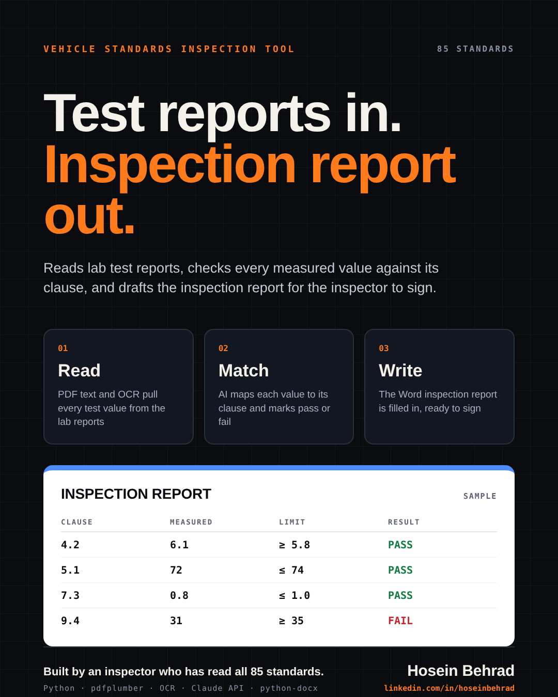

Product · Document automation
Vehicle standards inspection tool
As a vehicle standards inspector, I check lab test results against 85 national standards and write the inspection report. Done by hand, one report takes a week or longer. I built a tool that reads the lab reports, matches every value to its clause, and drafts the report for the inspector to review and sign.
- Role
- Inspector and builder
- Domain
- 85 vehicle standards
- Stack
- Python, pdfplumber, OCR, Claude API, python-docx
- Code
- Private (commercial)
How it works
- Read. Extracts text from lab report PDFs, and falls back to OCR for scanned pages.
- Match. Maps each measured value to the right clause and its limit, and marks it pass or fail.
- Write. Fills the official Word inspection report, ready for the inspector to check and sign.

A report that took a week or longer to put together by hand is now drafted by the tool. The inspector's time goes into review and judgement, not copying numbers.
Why I could build it
I have read all 85 standards and done the inspections myself. Knowing where the real work goes, and where errors creep in, decided what the tool automates and what it leaves to the inspector.
Interested in using this tool? Email hosein.behrad@gmail.com.